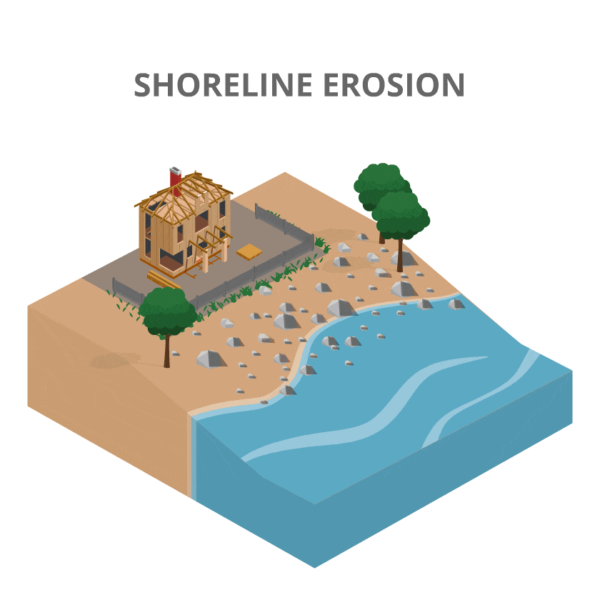

The Impact of Rain
Rain is a powerful force that touches almost every part of our world. It nourishes crops, replenishes freshwater supplies, and supports ecosystems. However, too much of it can cause devastating floods, disrupt daily life, and even pose health risks. Let's explore the wide-ranging impact of rain on our environment, infrastructure, and more.
1. Environmental Impact of Rain
Rain plays a crucial role in maintaining healthy ecosystems. It is a primary contributor to the water cycle, providing water to rivers, lakes, and underground aquifers. Rain supports plant growth, replenishes natural habitats, and helps maintain biodiversity. However, when rain is excessive, it can cause environmental harm, such as:
Flooding:
Heavy rainfall can overwhelm drainage systems, rivers, and streams, leading to flooding. This can result in the loss of natural habitats for animals and plants, and may cause destruction to wildlife populations, especially in low-lying areas.
Soil Erosion:
Intense rain can wash away topsoil, which is essential for growing vegetation. This erosion can lead to the degradation of farmland and the loss of habitats, affecting both plant and animal life.
Habitat Destruction:
Flooding caused by excessive rain can destroy homes for animals, displacing wildlife and affecting their survival.
Weather Simulation Animation:
Watch a dynamic simulation of rainfall and flooding in action! When you press "Start Rain," the raindrop falls, growing and splashing until it hits the ground, triggering the "Start Flood" animation. The flood gradually rises, changing the background color to simulate an intensifying weather event. Press "Reset" once the flood reaches its peak, the animation resets and is ready to play again, creating an immersive loop of weather changes.
2. Impact of Rain on Agriculture
Positive Effects:
Crops and Irrigation:
Rain provides essential water to crops, especially in regions that depend on rainfall for irrigation. Regular rainfall is crucial for ensuring healthy crops and sustaining agricultural economies.
Improved Crop Yields:
Sufficient rainfall can increase the productivity of crops like wheat, rice, and corn. The right amount of rain ensures that plants grow healthy, producing higher yields and better quality produce.
Negative Effects:
Crop Damage from Excessive Rain:
While rain is vital for crops, too much rainfall can harm them. Waterlogging occurs when the ground becomes saturated, leading to poor root aeration and plant suffocation. This is especially harmful to crops like potatoes and carrots.
Delayed Harvests:
Prolonged rainfall or storms can delay harvest seasons, reducing the amount of time farmers have to gather their crops. This can also lead to crops being damaged by mold or rot.
Pests and Diseases:
Excessive rain creates a breeding ground for pests and plant diseases, which thrive in moist environments. Fungus, mold, and bacterial infections can spread rapidly, damaging crops and reducing yields.
Impact of Rainfall on Crop Yields
This bar chart illustrates how different rainfall levels—light, moderate, and heavy—affect the yields of crops such as wheat, corn, and rice. It highlights the varying sensitivities of crops to rainfall intensity.
3. Impact of Rain on Infrastructure
The Positive Impact of Rain on Infrastructure
While heavy rainfall can be damaging, it also plays a crucial role in the sustainability of urban and rural infrastructure. Properly managed rainfall can lead to improved water management, enhanced resilience of infrastructure, and more sustainable communities.
Rainwater harvesting systems are a vital part of sustainable urban infrastructure. These systems help collect and store rainwater for use in irrigation, landscaping, and non-potable applications, reducing the pressure on freshwater resources. Additionally, rain supports the natural cooling of cities, reducing the urban heat island effect and improving air quality.
Rainfall also promotes soil health, which is crucial for the stability of infrastructure. Well-maintained soil prevents erosion and ensures that buildings and roads are less likely to shift or degrade over time.
Water Supply for Communities:
Rain is a vital source of drinking water for many communities, especially in areas that rely on rainwater harvesting systems. It fills reservoirs and supplies water to homes and businesses.
Hydroelectric Power Generation:
Rainfall helps maintain the flow of rivers and streams, which are used to generate hydroelectric power. Consistent rainfall supports renewable energy production, contributing to sustainable electricity generation.
The Negative Impact of Rain on Infrastructure
Rain can be a powerful force of nature, but its intensity and frequency can have severe consequences on infrastructure and the environment. In some cases, excessive rainfall leads to shoreline erosion, flooding, and other forms of damage that can disrupt ecosystems and pose a risk to communities.

Excessive rainfall and storm surges increase the risk of shoreline erosion, destabilizing coastlines and threatening infrastructure. Coastal roads, homes, and wildlife habitats can be washed away, leading to significant economic and environmental costs. The erosion of shorelines not only causes immediate damage but also has long-term effects on coastal ecosystems.
In addition to coastal erosion, rain can exacerbate other destructive phenomena like flooding and landslides, which contribute to the weakening of infrastructure and require costly repairs. As climate change intensifies weather patterns, the risk of shoreline erosion and other rain-related damage is expected to rise.
Flooding of Roads and Buildings:
Heavy rainfall can lead to flooding, which damages roads, bridges, and buildings. Waterlogged infrastructure can result in traffic delays, power outages, and the destruction of homes, schools, and hospitals.
Soil Erosion and Landslides:
In areas with steep terrain, heavy rain can trigger landslides, particularly in areas where deforestation has occurred. Soil erosion weakens the foundation of roads and buildings, leading to further damage and destruction.
Drainage System Overload:
Urban areas, especially those with inadequate drainage systems, can experience severe flooding when rainwater cannot be quickly drained away. This results in water pooling on roads, disrupting transportation and increasing the risk of accidents.
4. Impact of Rain on Human Health
Positive Effects:
Improved Air Quality:
Rain can help cleanse the air by washing away pollutants, dust, and pollen. This can lead to better air quality, benefiting people with respiratory issues like asthma or allergies.
Hydration and Water Resources:
Rain helps cleanse the air by removing pollutants and dust particles. This can be especially beneficial for people with respiratory issues like asthma or allergies, as it reduces the number of allergens and air pollutants. The fresh, clean air after a rainfall is often perceived as refreshing.
Reduction in Heat Stress:
In hot climates, rain helps lower the temperature, providing relief from heat stress. Intense heat can lead to conditions like heat exhaustion or heatstroke, but rain can alleviate the risk of these conditions by cooling the environment.
Negative Effects:
Waterborne Diseases:
Heavy rainfall can lead to contamination of water sources. When sewage systems overflow or when rainwater collects in unsanitary environments, bacteria, viruses, and parasites can spread, leading to illnesses such as cholera, dysentery, and typhoid. Floodwaters can carry harmful contaminants into homes, resulting in increased risks of gastrointestinal infections and skin diseases.
Mosquito-Borne Diseases:
Rainwater often collects in stagnant puddles and containers, providing ideal breeding grounds for mosquitoes. This can lead to an increase in diseases such as malaria, dengue fever, and Zika virus, which are transmitted by mosquito bites. The spread of these diseases can become a significant public health concern after heavy rainfall.
Accidents and Injuries:
Intense rainfall can lead to flash floods, which pose risks to human health and safety. Floods can cause drowning, injuries from debris, and physical trauma from being swept away. The disruption of normal life during floods can also prevent access to healthcare and other critical services, leading to long-term health impacts.
The Health Risk Calculator:
An interactive tool that allows users to assess potential health risks associated with rainfall in their area. By inputting data such as rainfall intensity, location type, and duration, users receive a personalized risk score indicating the likelihood of health issues like waterborne diseases and mosquito-borne illnesses. This tool educates users on how different weather conditions can impact their health and helps them make informed decisions.
5. Cultural and Social Impact of Rain
Positive Effects:
Cultural Significance:
Rain has cultural and spiritual significance in many societies. It is often seen as a symbol of fertility, renewal, and prosperity. For example, in some cultures, the arrival of the rainy season is celebrated with festivals and rituals.
Rain in the Arts:
Rain has inspired countless works of art, music, and literature. Poets, painters, and musicians have all found beauty and symbolism in rain, making it an important cultural symbol.
Negative Effects:
Disruption of Social Events:
Heavy rain can disrupt outdoor social events like festivals, weddings, or sports games. It can also affect daily life, causing delays in transportation, work, and schooling.
Economic Impact on Tourism:
For regions dependent on tourism, especially those relying on good weather for outdoor activities, heavy rainfall can have a significant economic impact by discouraging tourists and limiting activities.
Rain in Art: A Cultural Journey Through Time
Explore the creative influence of rain through this interactive timeline. From iconic paintings to timeless music and poetry, discover how rain has inspired artists, musicians, and writers across history. Click on each entry to learn more about the masterpieces and the cultural significance of rain in art.
Rain in Art: A Visual Timeline
1872
Claude Monet - "Impression, Sunrise"
A masterpiece that captures the misty sunrise and the reflection of light on water.
1939
Gene Kelly - "Singin' in the Rain"
An iconic scene from the famous musical film, celebrating the joy of dancing in the rain.
1921
Langston Hughes - "The Rain"
Poetry that captures the melancholy and beauty of the rain.
×
Claude Monet - "Impression, Sunrise"

This piece captures the essence of misty mornings with soft colors reflecting on water.
×
Gene Kelly - "Singin' in the Rain"

This joyful sequence from the 1952 film symbolizes freedom, optimism, and the beauty of rain.
×
Langston Hughes - "The Rain"
"The rain is full of life, bringing peace and refreshment..."
This poem explores the calming and cleansing qualities of rain in nature and in human life.